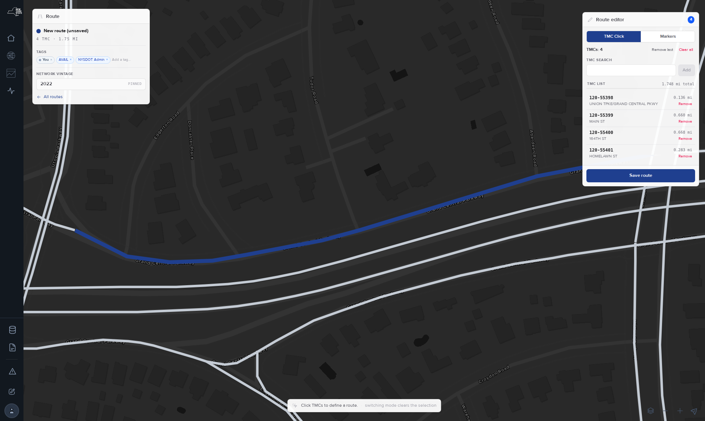
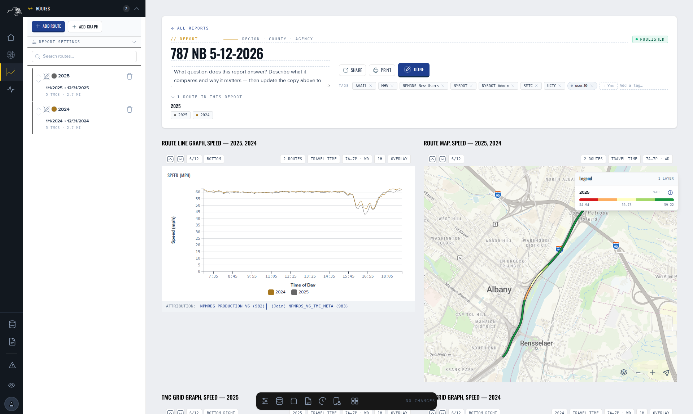

Build a route, put it in a report, read the measure.
About 10 minutes. You sign in, draw a route from a few road segments and save it, create a report, add the route with a date window, add one graph of travel time for the weekday AM peak, and read it. Written for a first-time user who knows one road well.
What you will do
Make the two things every NPMRDS analysis is built from: a route, which is a named, ordered list of segments, and a report, which is a page of graphs about routes over dates. At the end you have a saved route, a published report with one graph, and an address you can share.
Before you start
You need an account. Reading NPMRDS is public, but saving a route and saving a report both write to your account. If you have none, request one through Help and feedback. Pick a road you know, a few miles of one direction, and a month in a complete year, for example January 2025.
Steps
- Sign in. Open
/auth/login, enter Email and Password, select Sign In.You are signed in. NPMRDS runs on its own subdomain and may ask once more; use the same details. - Open Reports from the NPMRDS side navigation.You see the header row, then the template shelf titled Start from a question, not a blank page. The header holds a search bar, Create Report and New route.
- Select New route.Route Creation opens: one map with the network drawn in grey, a Route panel reading New route (unsaved), and a Route editor panel with the TMC Click | Markers toggle. A pill at the bottom reads Click TMCs to define a route.
- Zoom to your road with the map's zoom buttons or a double-click, and click 3 to 5 consecutive segments in the direction of travel. Clicking a segment again removes it.Each click adds a row to TMC list: the segment code, its length in miles and the cross street it ends at. The panel shows the running total and a Save route button.
- Select Save route. In Save new route, type a Name that reads well as a chart label, for example the road, direction and end points. Under Tags select the suggested + chips for yourself and your agency. Select Save.The address gains
?route_id=and your route's number. The Route panel shows an editing badge and the button now reads Update route. From here on, saving overwrites this route. - Return to Reports and select Create Report.A new report page opens in edit mode. Its address contains
/edit/. The header shows a Report title field and a draft pill. A Routes rail reads No routes added — add one above. - Type a title in the header. In the rail select Add Route. In Add Routes select the Mine chip, tick your route, then Add 1 Route.Your route appears as a row, already expanded: its colour dot, name, and a line such as "4 TMCs · 2.1 mi · No dates set · 0 graphs".
- Set the window. Under dates enter From and To, for example 2025-01-06 to 2025-01-31.The row saves on its own after a moment; the line now shows the dates. A route carries no dates of its own, so this window belongs to this report only.
- Select Add Graph. Under Routes for this graph tick your route. Keep Line Graph, Travel Time (min) and Hour, the defaults. Under When select AM Peak and Weekdays. Select Add Graph.A card appears below the header. Its pills read your route's name, Travel Time, 6a–10a · Wd, 1h and Overlay. The rail's line now ends "1 graph".
- Read the graph. The x-axis is Time of Day from 06:00 to 10:00 in hourly steps. The y-axis is the average number of minutes to drive the whole route in that hour, averaged over every weekday in your window. A rise from 07:00 to 09:00 is the morning peak. Speed on the same route is length divided by this travel time.You have one number per hour with a stated basis.
- Select Done in the header.The report publishes and opens in reading mode. The pill reads published, the rail is gone, and the graph stays. Share copies the address; the button reads Copied for a moment.


What you now have
A saved route, findable in every route picker under Mine. A published report with one graph and an address anyone can open. And the three rules that carry into everything else: a route is a place and carries no dates; the report's route row owns the dates; the graph owns the time of day, the days of the week and the measure.
Where to go next
- Build and edit a report · add the same route twice for two periods, add a Difference graph, change measures from the pills.
- Start a report from a template · 12 pre-built questions that only need your route.
- Create a route · Markers mode, the TMC search box, what is saved and what is not.
- Graph types reference · what each of the five shapes shows.
- Excessive delay · before you add a Hours of Delay graph.
References
- Route Creation plugin code (RouteEditor, RouteIdentityPanel, SaveRouteModal, ModeHintPill, 2026-09-03): the labels quoted in steps 3 to 5.
- Reports page revision 3 (published 2026-09-02): header controls Create Report and New route; band title.
- Report route list, Add Routes dialog, Add Graph dialog and Quick Controls code (2026-09-01): the labels quoted in steps 6 to 9; default pick Line Graph · Travel Time (min) · Hour · Plain; edit gate keyed on the page's edit mode since 2026-08-19.
- Report page header code: Edit / Done, Share → Copied; leaving edit mode publishes.
- Sign-in facts: the platform's sign-in ruling of 2026-09-04 and Sign in, sessions and accounts.